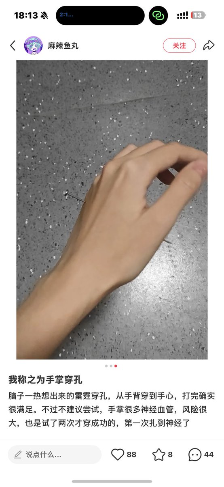
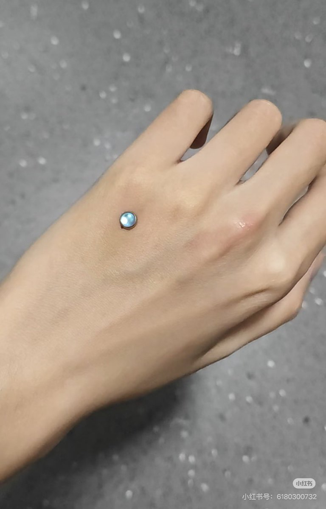
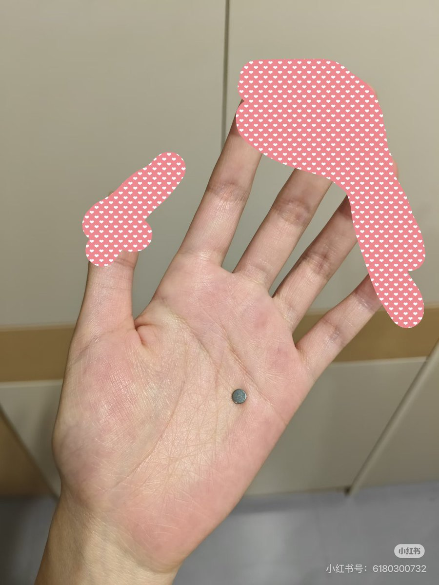

めふき2.0（低浮上）
@lan_shang32900
@OvooLOO3o 看上去有点像埋钉（？）很容易伤到血管神经甚至骨头吧，有点考验穿孔师医学知识



Arabidopsis thaliana (L.) Heynh.
@OvooLOO3o
我去这什么这可以打吗…
看起来好痛啊…！！
我称之为手掌穿孔 脑子一热想出来的雷霆穿孔，从手背... https://t.co/dewYd8rLO5
复制后打开【小红书】查看笔记！ https://t.co/CEow8RHBez